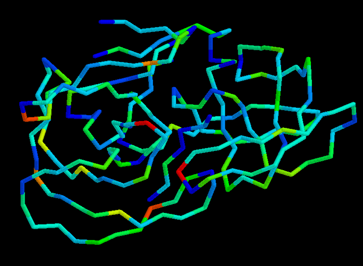
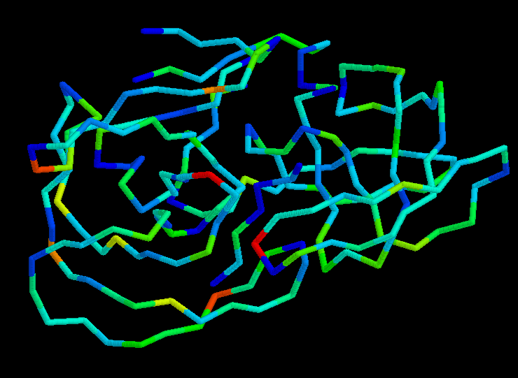

PROCHECK Operating Manual
PROCHECK Operating Manual
PROCHECK Operating Manual
The program generates an output file in PDB format with the following atoms' temperature factors replaced by values representing the G-factors of the corresponding torsion angles:-
G-factor Atoms
-------- -----
phi-psi N and CA
omega Backbone C
chi1-chi2 CB and CG
chi3 CD
chi4 CE
All other atoms' temperature factors are set to 0.
You can view the output PDB file using any molecular graphics
program (such as QUANTA or RasMol), and colour the atoms
according to B-value. The red regions of the structure will
be those with unusual torsion angles, corresponding to negative
G-factors.
Any large regions of redness might indicate parts of the structure that
need further attention. However, please note that some programs (eg
RasMol) scale the colours according to the maximum and minimum
B-values they encounter in the file. So, there will always be red
regions, corresponding to the maximum B-values, irrespective of how
large or small the absolute values of those B-values are.
You can overcome this problem by, say, inserting a dummy atom into your
displayed PDB file which has a B-value of 80.00 (which is
the maximum value that gfac2pdb gives). The atom might, for example,
be:
In RasMol you can "hide" this atom by using the command "select
not xxx".
Then, to run gfac2pdb, enter:
where:
For example,
The output file will be called 1abc_gfact.pdb.
HETATM 1 N XXX 1 0.000 0.000 0.000 1.00 80.00
Examples
 All atoms

Mainchain atoms
All atoms

Mainchain atoms
Running gfac2pdb
Before running gfac2pdb you must first run PROCHECK on your
structure so that all the G-factors are calculated.
gfac2pdb coordinate_file
gfac2pdb 1abc.pdb
PROCHECK Operating Manual